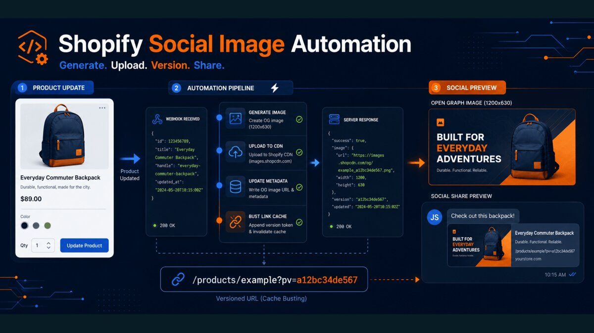

The Shopify AI store builder can turn a short description of your business into a working store draft in minutes. As co-founder of StartStorez, where our team has delivered more than 2,000 Shopify stores, I have watched that first step get much faster. The work that still eats a merchant's week usually starts after launch.
In this post I explain what the Shopify AI store builder does well and where it stops, then walk through a real custom Shopify app I built: a multi-store app that automatically creates branded social share images for every product, so links shared on WhatsApp and Facebook show the price and the deal instead of a plain photo. You will see the problem, the constraints, how it works and the trade-offs.
What the Shopify AI store builder does well, and where it stops
According to Shopify's own website builder page, you describe your business and the AI store builder generates store designs you can then edit with drag-and-drop tools. Sidekick, Shopify's built-in AI assistant, helps write product descriptions, headlines and customer messages. Shopify's AI website builder guide is clear that the result is a first draft: you still review layout, copy and SEO before publishing.
That is a real improvement for getting started. For a merchant moving from selling on Instagram to their own Shopify store, it removes the blank-page problem and the first few days of theme setup. But a store builder, AI or not, builds pages. It does not run your store's ongoing operations. Some jobs need logic that reacts to your own data every day.
| Option | Best for | Limit |
|---|---|---|
| Shopify AI store builder | A fast first draft of layout, copy and design | Builds pages; does not automate store-specific workflows |
| Apps from the Shopify App Store | Common needs such as reviews, bundles or email | You adapt your process to the app's rules |
| Custom Shopify app | A workflow specific to your products or business model | Needs a Shopify developer and ongoing maintenance |
My rule after years of store builds: start with the AI store builder and the App Store, and only build a custom app when a repeated manual task costs real hours every week and no existing app fits. The project below met that bar.
The problem: every shared product link looked the same
The store in this case sells daily deals, and most of its traffic comes from product links shared in WhatsApp groups and on Facebook. When someone shares a Shopify product link, the chat app shows a preview built from the page's Open Graph tags, usually just the product photo and title. The price, the discount and the brand were missing from the one image people actually saw.
Making a promotional image by hand for every product and every price change does not scale for a deals store. Two other problems made it worse:
- Social apps cache previews. After a price change, WhatsApp and Facebook kept showing the old image.
- Deal roundups. Some pages promote four products together and needed a combined preview, which no store builder or theme setting produces.
The constraints were just as important as the feature. The app had to work for more than one store, keep images in each merchant's own Shopify account, avoid editing theme code by hand, and handle store credentials securely.
How I built the custom Shopify app
The app is built with Node.js and Express, uses the Shopify GraphQL Admin API, App Bridge and a theme app extension, generates images with Sharp, stores installation records in PostgreSQL and runs on Vercel. Here is how the pieces fit.
Webhooks start the work
When a merchant creates or updates a product, Shopify sends a products/create or products/update webhook. Every webhook is verified before anything happens, because anyone can send a POST request to a public URL:
import crypto from "node:crypto";
// rawBody must be the exact bytes Shopify sent, not re-serialised JSON.
function isValidShopifyWebhook(rawBody, hmacHeader, appSecret) {
const digest = crypto.createHmac("sha256", appSecret).update(rawBody).digest("base64");
const received = Buffer.from(hmacHeader || "", "base64");
const expected = Buffer.from(digest, "base64");
return received.length === expected.length && crypto.timingSafeEqual(received, expected);
}Shopify can deliver the same webhook more than once, and most product saves do not change anything that appears in the image. So the app hashes the inputs that matter (title, prices, badge, product image, logo) and skips generation when the hash has not changed. That one check removed most of the unnecessary work.
Generating the image with Sharp
For a single product, the app builds a 1200 × 628 image with the product photo, a badge, the sale price, the crossed-out regular price and the store logo. For roundup pages, it builds a four-card layout from the products selected in a metafield. Merchants can override the badge text, prices and headline per product through metafields, or switch generation off for one product.
I chose Sharp over a headless browser screenshot because it is fast, predictable and cheap to run in a serverless function. The trade-off is that layout is done in code rather than HTML, so design changes take longer.
I also decided not to use a generative AI image model here, even though "AI" sells well. A deal image has to show the exact price, the exact logo and the same layout every time. Image models still get text and numbers wrong, and a wrong price in a shared link is worse than no image. AI is useful around this workflow, for example to suggest badge wording, but the image itself is built from the store's data.
Merchant-owned storage and metafields
Generated images are uploaded to the merchant's own Shopify Files, so they are served from Shopify's CDN and stay in the merchant's account if they ever uninstall the app. The image URL and version hashes are written back to product metafields in a single mutation. The app creates the metafield definitions during installation, so merchants never set them up by hand.
Beating the social preview cache
Facebook offers an API to force a re-scrape, but relying on it for every product change is fragile. Instead, the app stores a short sharing version, and a small theme app embed adds it to the shared product URL as a pv parameter. When the image changes, the version changes, the URL is new to the social app, and it fetches the fresh preview.
Installation and security
The app supports many stores. App Bridge provides signed session tokens, the backend exchanges them for offline access tokens, and those tokens are encrypted before they are stored per shop. It also implements Shopify's mandatory privacy webhooks and cleans up on uninstall. I wrote about the same webhook discipline for payments in Stripe webhooks: fixing duplicates and retries.

What the merchant actually does
All of this is hidden from the store owner. After installing the app, a merchant does four things:
- Installs the app and approves its Shopify permissions.
- Uploads a logo and confirms the public storefront domain.
- Opens the theme editor link, switches on the social preview embed and saves the theme.
- Saves a product. The promotional image is created automatically from then on.
That is the kind of hand-off I aim for with any Shopify build: the clever part runs in the background, and the store team keeps working in the Shopify admin they already know.
Trade-offs and what I would change
No custom build is free of compromises. These are the honest ones in this project:
- One manual step remains. Shopify disables theme app embeds by default, so the merchant has to switch on the social preview embed and save the theme once.
- Themes differ. Some themes already print their own Open Graph tags, so duplicate tags must be tested on each target theme before release.
- Stricter duplicate tracking. The content hashes make repeated deliveries harmless, but storing each webhook delivery ID would be the stronger production design.
- Distribution rules. Serving unrelated merchants needs public distribution and Shopify App Review; custom distribution is limited to one store or one organisation.
- Testing limits. A password-protected development store cannot complete the final external crawler check, so that step happens on a live storefront.
AI store builder, app or custom build: how to decide
If you are starting a store, use the Shopify AI store builder for the first draft and spend your energy on products, photos and offers. Add apps from the App Store for common needs. Consider a custom Shopify app when all of these are true:
- The task repeats every day or every week and is done by hand today.
- It depends on your own data, such as product metafields, prices or inventory.
- No existing app does it the way your business works.
- Saving that time or improving that result is worth a build and ongoing maintenance.
The social image app met all four: every product change used to need a new image, the image depended on product data, and the result showed up in every shared link. You can see it with my other work in the portfolio. If you need a Shopify developer for a custom app or automation like this, get in touch and tell me what you are doing by hand today.

Written from production experience